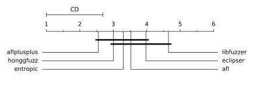
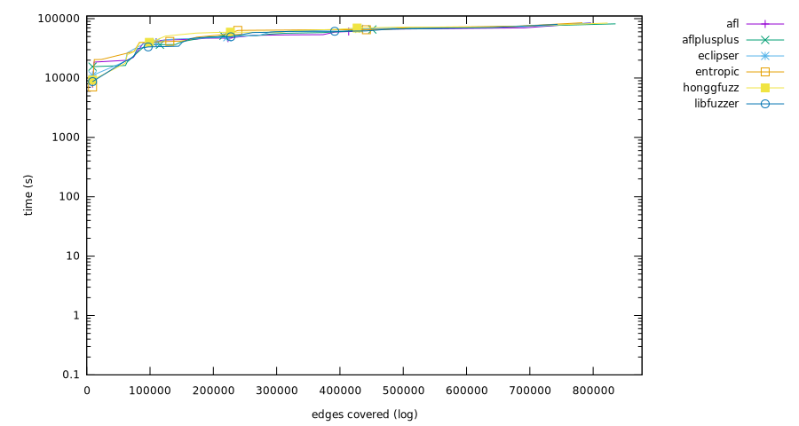
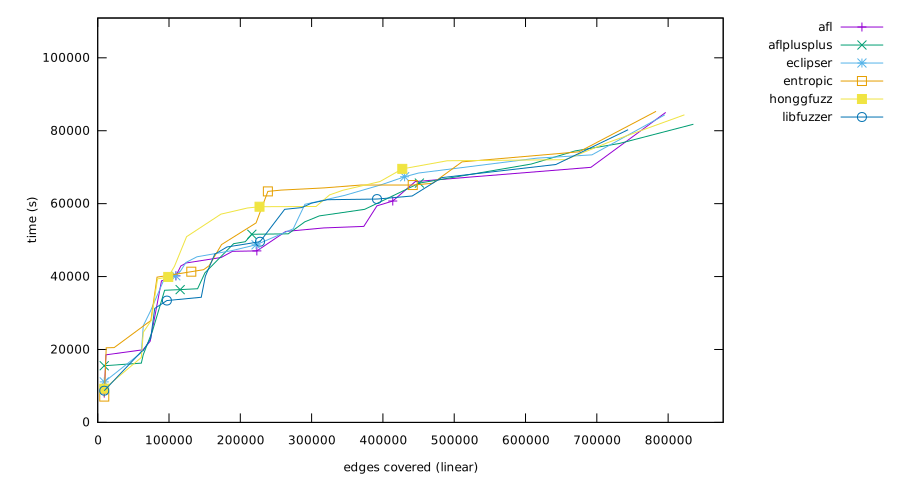
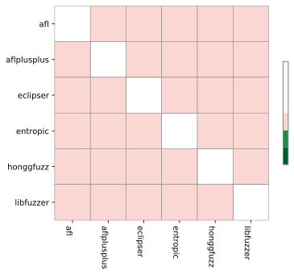

Experiment result
Critical difference

| Fuzzer | Rank |
|---|
| aflplusplus | 2.55 |
| honggfuzz | 3.00 |
| entropic | 3.30 |
| afl | 3.50 |
| eclipser | 4.00 |
| libfuzzer | 4.65 |
Overall (ranking by edges covered)
- aflplusplus (835,453 edges covered)
- honggfuzz (822,878 edges covered)
- afl (796,629 edges covered)
- eclipser (795,394 edges covered)
- entropic (783,033 edges covered)
- libfuzzer (743,882 edges covered)


bloaty_fuzz_target
Ranking
- afl, (31,625 edges covered, total time 66,060s)
- honggfuzz, (31,357 edges covered, total time 69,540s)
- eclipser, (31,221 edges covered, total time 67,380s)
- entropic, (27,766 edges covered, total time 65,580s)
- libfuzzer, (23,877 edges covered, total time 58,920s)
- aflplusplus, (21,760 edges covered, total time 36,420s)
curl_curl_fuzzer_http
Ranking
- aflplusplus, (63,555 edges covered, total time 58,440s)
- afl, (53,438 edges covered, total time 53,340s)
- honggfuzz, (52,215 edges covered, total time 66,060s)
- eclipser, (52,121 edges covered, total time 53,100s)
- entropic, (48,426 edges covered, total time 54,720s)
- libfuzzer, (46,220 edges covered, total time 49,560s)
freetype2-2017
Ranking
- honggfuzz, (62,931 edges covered, total time 71,760s)
- aflplusplus, (61,997 edges covered, total time 76,500s)
- eclipser, (52,624 edges covered, total time 65,280s)
- libfuzzer, (41,383 edges covered, total time 67,140s)
- entropic, (41,307 edges covered, total time 71,460s)
- afl, (40,481 edges covered, total time 52,380s)
harfbuzz-1.3.2
Ranking
- aflplusplus, (61,533 edges covered, total time 74,460s)
- honggfuzz, (59,315 edges covered, total time 76,740s)
- afl, (56,061 edges covered, total time 53,760s)
- eclipser, (56,014 edges covered, total time 62,280s)
- entropic, (51,364 edges covered, total time 65,100s)
- libfuzzer, (49,331 edges covered, total time 62,100s)
jsoncpp_jsoncpp_fuzzer
Ranking
- entropic, (9,196 edges covered, total time 7,080s)
- afl, (9,194 edges covered, total time 8,040s)
- eclipser, (9,194 edges covered, total time 11,100s)
- honggfuzz, (9,191 edges covered, total time 9,240s)
- libfuzzer, (9,190 edges covered, total time 8,700s)
- aflplusplus, (9,145 edges covered, total time 15,540s)
lcms-2017-03-21
Ranking
- aflplusplus, (20,318 edges covered, total time 56,640s)
- honggfuzz, (19,075 edges covered, total time 62,400s)
- afl, (18,451 edges covered, total time 59,400s)
- entropic, (16,550 edges covered, total time 63,360s)
- eclipser, (16,350 edges covered, total time 59,820s)
- libfuzzer, (13,533 edges covered, total time 60,120s)
libjpeg-turbo-07-2017
Ranking
- aflplusplus, (24,479 edges covered, total time 36,660s)
- afl, (20,227 edges covered, total time 40,200s)
- eclipser, (19,860 edges covered, total time 39,600s)
- entropic, (18,867 edges covered, total time 63,720s)
- honggfuzz, (16,910 edges covered, total time 50,940s)
- libfuzzer, (13,222 edges covered, total time 46,140s)
libpcap_fuzz_both
Ranking
- aflplusplus, (40,182 edges covered, total time 49,020s)
- honggfuzz, (37,033 edges covered, total time 58,800s)
- entropic, (36,527 edges covered, total time 64,080s)
- libfuzzer, (34,592 edges covered, total time 58,440s)
- eclipser, (34,344 edges covered, total time 48,720s)
- afl, (34,317 edges covered, total time 47,040s)
libpng-1.2.56
Ranking
- aflplusplus, (13,111 edges covered, total time 25,140s)
- entropic, (11,122 edges covered, total time 20,520s)
- honggfuzz, (11,019 edges covered, total time 27,960s)
- libfuzzer, (10,433 edges covered, total time 22,980s)
- eclipser, (10,115 edges covered, total time 30,540s)
- afl, (9,953 edges covered, total time 22,260s)
libxml2-v2.9.2
Ranking
- honggfuzz, (79,177 edges covered, total time 59,220s)
- afl, (78,683 edges covered, total time 67,320s)
- eclipser, (77,079 edges covered, total time 73,380s)
- aflplusplus, (76,738 edges covered, total time 65,640s)
- entropic, (72,947 edges covered, total time 65,100s)
- libfuzzer, (69,713 edges covered, total time 61,260s)
libxslt_xpath
Ranking
- aflplusplus, (51,068 edges covered, total time 51,720s)
- afl, (48,822 edges covered, total time 45,240s)
- eclipser, (48,540 edges covered, total time 47,100s)
- libfuzzer, (48,163 edges covered, total time 34,320s)
- honggfuzz, (48,158 edges covered, total time 57,120s)
- entropic, (48,037 edges covered, total time 41,340s)
mbedtls_fuzz_dtlsclient
Ranking
- aflplusplus, (9,249 edges covered, total time 51,600s)
- honggfuzz, (8,761 edges covered, total time 42,840s)
- entropic, (7,783 edges covered, total time 42,960s)
- eclipser, (7,005 edges covered, total time 41,640s)
- afl, (6,914 edges covered, total time 42,900s)
- libfuzzer, (5,742 edges covered, total time 40,080s)
openssl_x509
Ranking
- entropic, (23,465 edges covered, total time 64,320s)
- aflplusplus, (23,274 edges covered, total time 55,020s)
- libfuzzer, (22,369 edges covered, total time 61,080s)
- afl, (22,169 edges covered, total time 60,720s)
- eclipser, (19,649 edges covered, total time 68,400s)
- honggfuzz, (18,401 edges covered, total time 63,660s)
openthread-2019-12-23
Ranking
- entropic, (17,136 edges covered, total time 41,880s)
- libfuzzer, (17,071 edges covered, total time 33,420s)
- aflplusplus, (16,927 edges covered, total time 36,240s)
- afl, (15,868 edges covered, total time 38,820s)
- eclipser, (15,666 edges covered, total time 40,200s)
- honggfuzz, (15,085 edges covered, total time 39,900s)
php_php-fuzz-parser
Ranking
- entropic, (108,014 edges covered, total time 85,320s)
- honggfuzz, (107,590 edges covered, total time 84,360s)
- afl, (104,948 edges covered, total time 85,020s)
- aflplusplus, (103,965 edges covered, total time 81,780s)
- eclipser, (102,298 edges covered, total time 84,360s)
- libfuzzer, (101,312 edges covered, total time 80,280s)
proj4-2017-08-14
Ranking
- entropic, (17,492 edges covered, total time 48,780s)
- libfuzzer, (17,218 edges covered, total time 48,120s)
- honggfuzz, (17,129 edges covered, total time 59,160s)
- aflplusplus, (16,285 edges covered, total time 49,560s)
- afl, (15,725 edges covered, total time 46,920s)
- eclipser, (15,533 edges covered, total time 45,420s)
re2-2014-12-09
Ranking
- aflplusplus, (52,063 edges covered, total time 16,260s)
- libfuzzer, (52,051 edges covered, total time 19,440s)
- afl, (52,050 edges covered, total time 19,920s)
- eclipser, (52,035 edges covered, total time 19,140s)
- honggfuzz, (52,006 edges covered, total time 17,820s)
- entropic, (51,508 edges covered, total time 27,960s)
sqlite3_ossfuzz
Ranking
- afl, (167,556 edges covered, total time 69,960s)
- eclipser, (165,939 edges covered, total time 72,480s)
- honggfuzz, (165,865 edges covered, total time 72,060s)
- entropic, (164,124 edges covered, total time 74,220s)
- libfuzzer, (160,151 edges covered, total time 70,740s)
- aflplusplus, (156,835 edges covered, total time 70,860s)
systemd_fuzz-link-parser
Ranking
- honggfuzz, (2,805 edges covered, total time 24,720s)
- entropic, (2,751 edges covered, total time 20,460s)
- eclipser, (2,683 edges covered, total time 26,520s)
- aflplusplus, (2,625 edges covered, total time 18,540s)
- libfuzzer, (2,562 edges covered, total time 19,680s)
- afl, (2,396 edges covered, total time 18,540s)
vorbis-2017-12-11
Ranking
- aflplusplus, (10,344 edges covered, total time 41,040s)
- honggfuzz, (8,855 edges covered, total time 39,360s)
- entropic, (8,651 edges covered, total time 39,840s)
- afl, (7,751 edges covered, total time 43,740s)
- eclipser, (7,124 edges covered, total time 43,860s)
- libfuzzer, (5,749 edges covered, total time 31,260s)